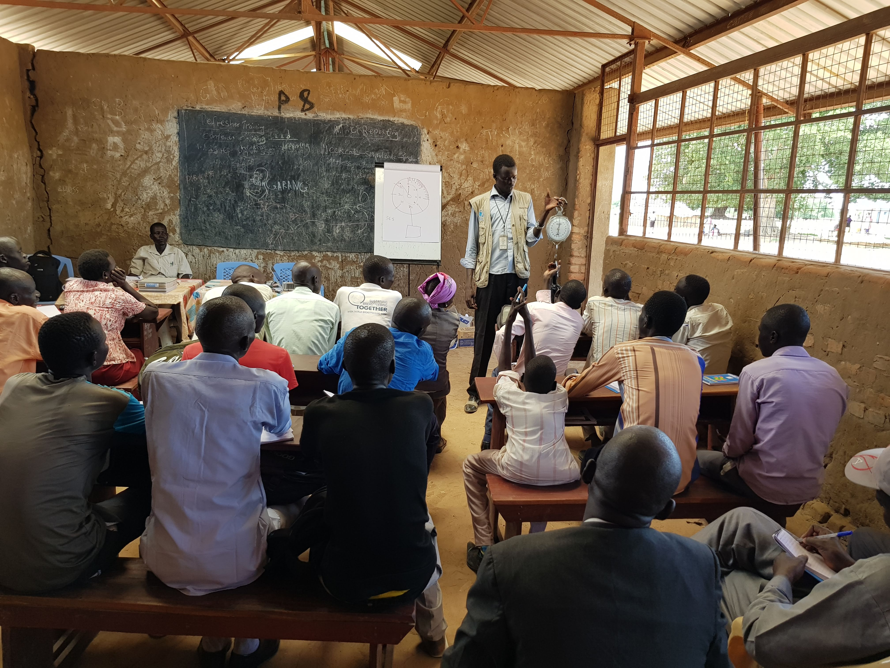
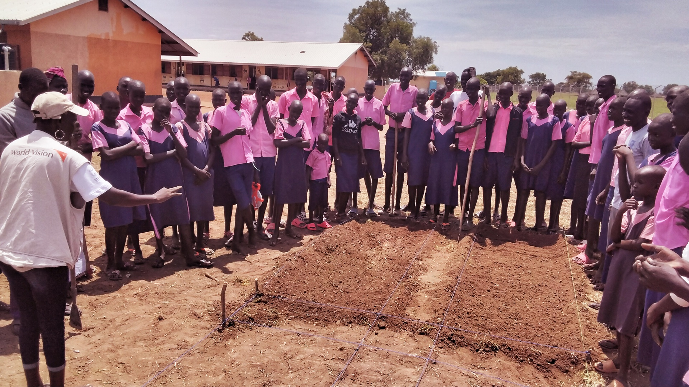
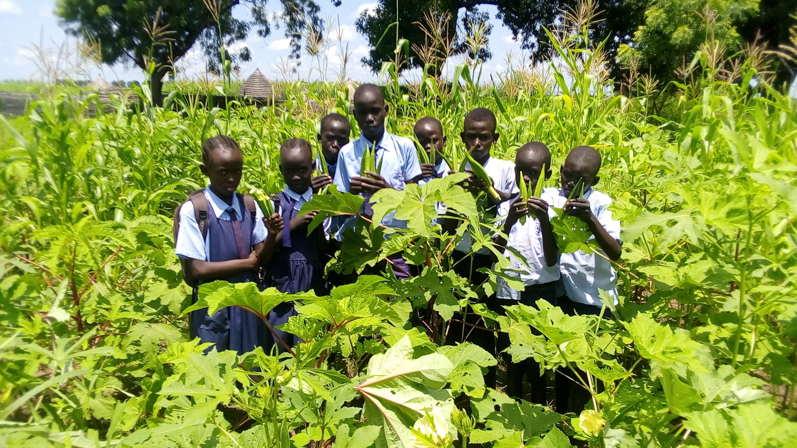
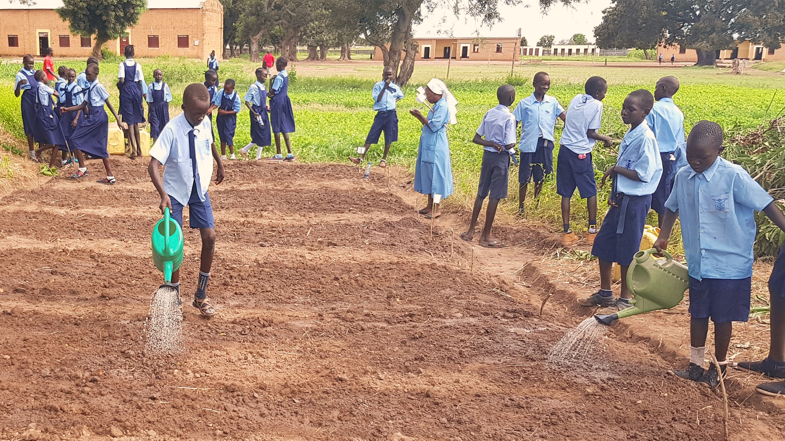
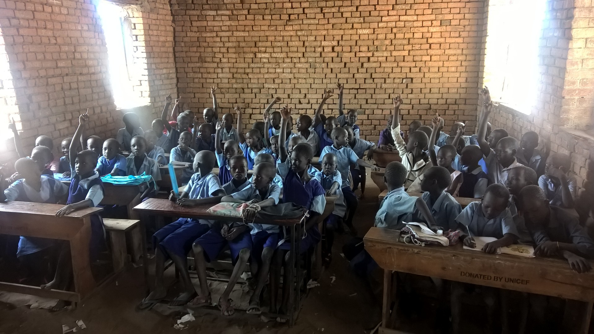
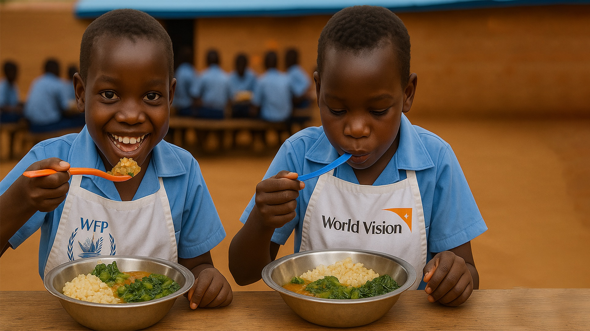

Food/Cash Assistance and Area Programme Manager
Food Assistance & Resource Management Professional
World Vision International | South Sudan






Food Assistance & Resource Management Professional
World Vision International | South Sudan
A dynamic, versatile, and results-driven Food Security and Humanitarian Programme Professional with over ten years of experience managing large-scale food assistance, nutrition, and livelihood programmes in complex humanitarian settings. Extensive experience in the design and management of food and cash assistance interventions, including General Food Distribution, Cash-Based Transfers, in-kind School Feeding, Asset Creation & Livelihood, and Supplementary Feeding programmes.
Strong background in programme management, commodity management, humanitarian logistics coordination, monitoring and evaluation, and donor compliance. Demonstrated ability to lead multi-sectoral teams, coordinate with humanitarian partners and government institutions, and ensure accountable delivery of assistance to vulnerable populations.
Experienced in working in partnerships with agencies such as the World Food Programme and humanitarian NGOs to implement integrated food security programmes that strengthen resilience and support community development. Passionate about integrating holistic Faith and Development approaches into humanitarian programmes. Also, a creative storyteller with advanced skills in photography, graphic design, video production, web development, and architectural project design, using visual arts and digital media to document community experiences and bring compelling narratives to life in ways that inspire awareness and action.
Purpose of the position
Lead strategic planning, implementation, and management of food assistance,
nutrition, school feeding, and livelihood programmes across Greater Tonj
and Gogrial East, ensuring quality programming, compliance, resource
management, and humanitarian impact.
Purpose of the position
Managed WFP-funded school feeding programmes across Warrap State,
strengthening access to education, improving attendance, and ensuring
effective programme implementation, monitoring, and accountability.
Purpose of the position
Coordinated county-level implementation of general food assistance, school feeding,
and livelihood programmes while strengthening stakeholder engagement,
compliance, and programme performance.
Purpose of the position
Supported humanitarian supply chain operations by managing commodity
tracking, transportation monitoring, and last-mile delivery systems to
ensure timely and accountable food assistance delivery.
strong>Purpose of the position
Supported programme research, monitoring, evaluation, and learning
activities through data collection, analysis, reporting, and performance
tracking systems.
Purpose of the position
Supported community health and nutrition interventions through nutrition
screening, monitoring, data management, community engagement, and Faith &
Development integration.
English | Arabic | Dinka
I believe effective humanitarian leadership combines technical precision, accountability, and deep community engagement.
My work integrates food security, logistics excellence, and holistic faith-based development approaches to create sustainable impact.
Beyond programming, I am passionate about creative storytelling through photography and digital media, using visual narratives to amplify community voices and inspire action.
Email: aroumawien@outlook.com
Phone: +211 (0) 924 928 828 | +211 (0) 914 928 828
Location: Warrap State, South Sudan